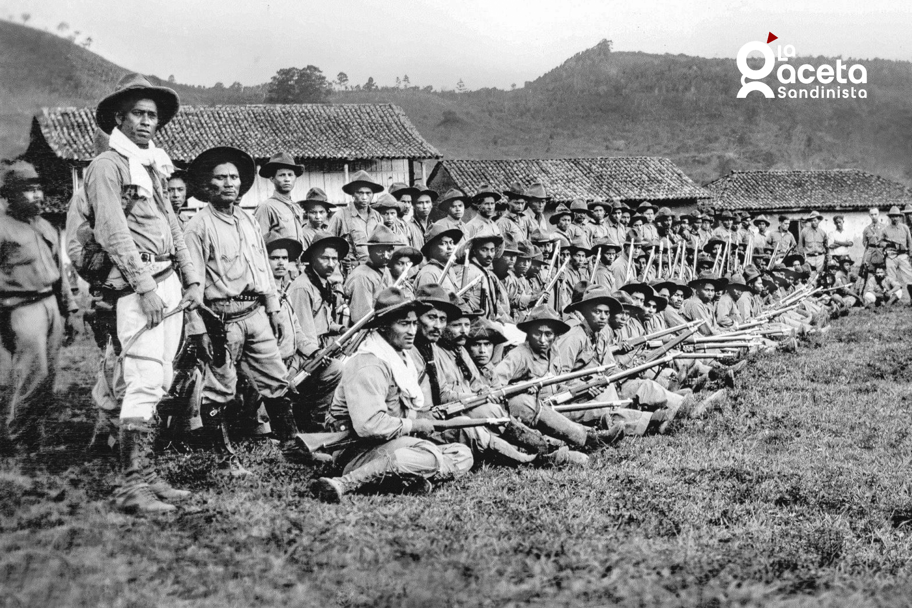

Universidad Nacional De Ingeniería
Universidad Nacional De Ingeniería

Augusto C. Sandino ocupa un lugar profundamente significativo en la historia de Nicaragua debido a la amplitud y profundidad de sus contribuciones políticas, militares, sociales e ideológicas. Su papel no puede reducirse únicamente al liderazgo de una resistencia armada, sino que debe entenderse como el de un actor histórico que influyó en la construcción de una conciencia nacional basada en la soberanía, la autodeterminación y la dignidad colectiva. En una época caracterizada por la fragilidad institucional, la inestabilidad política y la presencia prolongada de fuerzas extranjeras en territorio nicaragüense, Sandino emergió como una figura que desafió el orden establecido y defendió la idea de que Nicaragua tenía el derecho absoluto de decidir su propio destino sin imposiciones externas. Su postura representó un acto de afirmación nacional en un contexto donde muchos sectores consideraban inevitable la influencia extranjera.
El contexto histórico en el que actuó Sandino fue determinante para comprender la magnitud de su contribución. Desde 1912, Nicaragua había experimentado la intervención militar de Estados Unidos, lo cual influyó directamente en la política interna, en la economía y en la estabilidad institucional del país. Cuando en 1927 se firmaron acuerdos políticos que buscaban poner fin al conflicto interno pero permitían la continuidad de la presencia extranjera, Sandino decidió no aceptar esas condiciones. Esta decisión no solo prolongó el conflicto, sino que redefinió su significado. Lo que inicialmente era una disputa política interna pasó a convertirse en una lucha por la soberanía nacional. Con ello, Sandino consolidó el principio de que la independencia política no podía negociarse ni condicionarse, y estableció un precedente moral en la historia nacional.
Para sostener su resistencia, organizó el Ejército Defensor de la Soberanía Nacional de Nicaragua, una estructura militar que, pese a sus limitados recursos, logró mantenerse activa durante varios años. Este ejército estaba compuesto en gran medida por campesinos y trabajadores rurales que compartían un sentido de pertenencia y compromiso con la causa nacional. La capacidad organizativa de Sandino fue una de sus contribuciones más relevantes, ya que logró transformar un grupo reducido de combatientes en una fuerza estructurada, con principios de disciplina, jerarquía y orientación política. No se trataba simplemente de un movimiento armado espontáneo, sino de una organización con objetivos definidos y una visión clara del país que aspiraban a defender. Esta estructura permitió que la resistencia se extendiera hasta 1933, año en que las tropas estadounidenses abandonaron Nicaragua.
En el ámbito estratégico, Sandino aportó significativamente al desarrollo de tácticas de guerra de guerrillas adaptadas a las condiciones geográficas y sociales del país. Desde las montañas del norte de Nicaragua, especialmente en la región de Las Segovias, implementó estrategias basadas en la movilidad constante, el conocimiento profundo del terreno y el apoyo de las comunidades locales. Evitó enfrentamientos directos prolongados con fuerzas superiores en armamento y logística, optando por ataques sorpresivos, repliegues rápidos y reorganización táctica. Este modelo de resistencia demostró que la desigualdad en recursos no necesariamente determina el resultado de un conflicto cuando existe organización, convicción y estrategia. Su experiencia se convirtió en un referente temprano dentro de la historia de las luchas asimétricas en América Latina.
Más allá del plano militar, Sandino desarrolló un pensamiento político que trascendía las fronteras nacionales. En sus escritos y declaraciones públicas, sostuvo que la intervención en Nicaragua formaba parte de un patrón más amplio de influencia y dominación en América Latina. Desde esta perspectiva, la defensa de Nicaragua se vinculaba con la defensa de la soberanía regional. Promovía la unidad de los pueblos latinoamericanos y la necesidad de mantener una postura firme frente a cualquier forma de intervención extranjera. Este enfoque le otorgó a su lucha un carácter continental y contribuyó a fortalecer una corriente de pensamiento basada en la autodeterminación y el respeto entre naciones soberanas.
Asimismo, una dimensión fundamental de sus contribuciones fue su preocupación por la justicia social. Sandino consideraba que la independencia política carecía de sentido si no iba acompañada de transformaciones internas que mejoraran la vida de la población. Defendía mejores condiciones para el campesinado, mayor equidad económica y una organización social que redujera las desigualdades estructurales. En su visión, la soberanía no era solo una cuestión territorial o política, sino también social y económica. Esta integración entre independencia nacional y justicia interna amplió el alcance de su legado y lo proyectó más allá del campo de batalla hacia el debate sobre el modelo de nación que debía construirse.
Tras su asesinato en 1934, durante el proceso de consolidación del poder de Anastasio Somoza García, la figura de Sandino adquirió una dimensión simbólica aún más profunda. Su muerte no significó el fin de su influencia, sino que reforzó su imagen como símbolo de resistencia y dignidad nacional. Con el paso del tiempo, su nombre fue retomado por diversos movimientos políticos, entre ellos el Frente Sandinista de Liberación Nacional, consolidando su presencia en la historia política contemporánea de Nicaragua. Su figura pasó a formar parte de la memoria colectiva y del imaginario nacional como referente de lucha y compromiso.
En el ámbito cultural, educativo e histórico, Sandino continúa siendo objeto de estudio y reflexión. Su pensamiento, sus acciones y su legado influyen en la manera en que se interpreta la historia del siglo XX en Nicaragua. Representa la idea de que la dignidad nacional puede sostenerse incluso en circunstancias adversas y que la defensa de principios fundamentales puede trascender generaciones. Su contribución no se limita a un episodio específico, sino que constituye un componente estructural en la construcción de la identidad histórica del país.